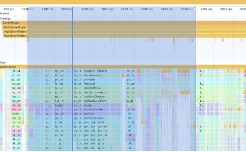

Why is my webpack build slow?
For many of us, qebpack is the bottleneck between when we write our code and when we see its side-effects; This is the developer critical path that we feel every single save.
The trope of “my webpack build is slow” is well worn into the ethos of modern web development; This does
however
not lay blame at the feet of any single tool, but rather is a measure of the systemic acceptance and use of
webpack for building web applications. To be clear we are not talking about your JS bundle runtime
performance
but rather the time that it takes to generate that runtime bundle.
The first step to understanding any system is to measure it, and in order to make something faster we must look at where time is being spent. Luckily when it comes to Node.js we have a cadre of tools to help us profile and understand where time is going for any process. Finding said tools however is a journey strangely intervolven with a smattering of abandoned tooling from multiple-attempts by multiple companies trying to enter the enterprise Node space. I am going to skip all of this noise and cut out all of the stackoverflow and gist sleuthing and jump right into your options:
Approach 1: Using the built in webpack plugin profiler (webpack 4+)
webpack --plugin webpack/lib/debug/ProfilingPlugin

Pros:- Each webpack plugin is annotated in the timings section of the profile, making it easier for you to associate CPU timing with semantic category.
- If your webpack build takes a very long time you can generate trace files that will crash chrome devtools. The node process may OOM1 during recording, as well.
- The profiling plugin adds overhead, which skews the results. In particular, the function-level instrumentation makes code with quick, but heavily-run functions, take a bit longer.
Approach 2: Using node’s --prof and --prof-process tooling
node --prof node_modules/.bin/webpack-cli --mode development --config webpack.dev.js
node --prof-process isolate-$ID_HERE-v8.log > processed.txt
You can read more about this here: https://nodejs.org/en/docs/guides/simple-profiling/
It is possible to render the v8 log file further to create a flamechart via
npx pflames isolate-$ID_HERE-v8.log
Pros:
- Side-stepped all userland code and profiles at a V8 level
- Exposes C++ binding overhead as well
- Can handle very long running processes without running out of memory
- Limited visibility into the entire process with report
- No UI to explore the process with
Approach 3: Using devtools + --inspect
node --inspect-brk node_modules/.bin/webpack-cli --mode development --config webpack.dev.js
Then save the CPU profile and then load the CPU profile back into chrome devtools.
Pros:
- Exposes memory / heap information during the profiling making it possible for you to understand your compilation memory overhead.
- Long running traces easily exhaust / crash chrome process
- Tooling feels fragile (as measured through user facing latency of taking the profile)
In Summary:
What approach is best for you? Well it depends on your needs and the size of your build. My recommendation is to attempt approach one since it provides the most human readable version of your build and only to drop into the other approaches if you are otherwise unable to get approach one working. Special thanks to Paul Irish for reviewing and assisting in the generation of this document.
Sam Saccone @samccone| 1 - It's possible for large webpack builds to encounter out of memory errors during recording with the ProfilingPlugin. When this happens you can first attempt to raise the memory ceiling for the node process via the --max-old-space-size= flag. If this still does not work we can fall back to a more involved solution: The webpack profile plugin implementation waits until the compile is complete to flush out to a file https://github.com/webpack/webpack/blob/master/lib/debug/ProfilingPlugin.js#L203, it is however possible to change this implementation to incrementally flush the results out to a file every N duration… This implementation is something that I will leave up to the reader, but this is open source software so PRs are welcome :) |